215 — Multi-región, Route 53, failover y game day
Parte: 17 — AWS: arquitectura, automatización y operación en producción
Nivel: avanzado · Horas estimadas: 4
Laboratorio: reliability · Estado: EXECUTABLE_CORE
🎯 Propósito
Comprobar que el sistema sobrevive a la pérdida de una región, y comprobarlo ejecutándolo. La clase cubre los modos de despliegue multirregión con su coste real, la conmutación por nombres y sus límites —que casi siempre son el cuello—, la replicación de datos con su decisión de consistencia, y el ejercicio dirigido: cómo se prepara, cómo se ejecuta y por qué la mayoría de lo que encuentra no es de infraestructura.
📚 Resultados de aprendizaje
Al finalizar podrás:
- Elegir el modo multirregión que corresponde al objetivo, con su coste.
- Conmutar por nombres conociendo el retraso real, no el teórico.
- Replicar datos decidiendo qué se pierde y qué se bloquea.
- Preparar y ejecutar un ejercicio dirigido con seguridad.
- Corregir lo que el ejercicio encuentre, que rara vez es lo previsto.
🧩 Conceptos centrales
| Concepto | Comprensión verificable |
|---|---|
activo-pasivo en frío |
La segunda región existe declarada y apagada. Barata y lenta de activar. |
activo-pasivo en caliente |
La segunda región tiene capacidad mínima encendida y datos replicados. |
activo-activo |
Ambas regiones sirven tráfico. Caro, y obliga a resolver la escritura en dos sitios. |
comprobación de salud del nombre |
Sonda que decide si un destino se anuncia. Su intervalo y umbrales fijan el tiempo de conmutación. |
ejercicio dirigido |
Simulación planificada de un fallo real, con hipótesis escrita, ventana acordada y forma de parar. |
hipótesis del ejercicio |
Lo que se espera que ocurra, escrito antes. Lo valioso es dónde falla. |
🧠 Modelo mental
AWS se aprende como una progresión operativa: identidad federada, infraestructura declarativa, entrega, señales, recuperación y costo controlado.
Aplicado a esta clase, separa siempre cuatro planos: intención (qué necesita el usuario), configuración (qué declaramos), estado observado (qué existe de verdad) y evidencia (cómo sabemos que cumple). Confundirlos produce diseños que se ven correctos en un diagrama pero fallan al operar.
🗺️ Flujo de razonamiento

📖 Desarrollo
1. Modos multirregión y su coste
La elección se hace por el objetivo de recuperación, y el objetivo se decide con el coste de la indisponibilidad, no con lo que suene bien.
FRÍO
la infraestructura está declarada como código y no
desplegada; los datos, en copias replicadas
plazo horas
coste almacenamiento de copias y poco más
riesgo el despliegue completo nunca se ha ejecutado
→ y es exactamente lo que falla ley 22
CALIENTE (piloto)
capacidad mínima encendida, datos replicados en continuo
plazo minutos
coste 30-40 % de una región completa
riesgo la capacidad mínima tarda en escalar al 100 %
ACTIVO-ACTIVO
ambas regiones sirven
plazo segundos
coste más del doble de una región
riesgo hay que resolver la escritura en dos sitios, que
es el problema difícil clase 187
Y la decisión, con la aritmética de siempre:
coste de la indisponibilidad = minutos esperados × pérdida
por minuto
y se compara con el coste del modo siguiente
→ si pasar de caliente a activo-activo cuesta 6.400 €/mes y
evita 390 € de pérdida esperada, no se compra
clases 164, 185
Y la advertencia sobre activo-activo, que se propone más de lo que se justifica:
ACTIVO-ACTIVO OBLIGA A DECIDIR DÓNDE SE ESCRIBE
un escritor global → latencia alta desde la otra
región
escritura por región → hay que particionar los datos
por región y que no se crucen
escritura en ambas → conflictos, y hay que
resolverlos ley 21
→ la mayoría de los sistemas que dicen ser activo-activo
son activo-pasivo con lectura en las dos
Y lo que hay que replicar además de los datos:
imágenes de contenedor y artefactos clase 212
secretos y claves de cifrado
configuración y banderas de función
certificados
reglas de filtrado
y la propia canalización, capaz de desplegar allí
→ una región secundaria sin registro de imágenes propio no
puede arrancar nada clase 185
2. Conmutar por nombres, con los límites reales
La conmutación por nombres es el mecanismo habitual y su tiempo real casi nunca coincide con el previsto.
LOS COMPONENTES DEL RETRASO
1 DETECCIÓN
comprobación de salud: intervalo × fallos consecutivos
típico 30 s × 3 = 90 s
→ configurable, y es lo más fácil de reducir
2 PROPAGACIÓN DEL CAMBIO
el servicio de nombres reevalúa y deja de anunciar
3 TTL DEL REGISTRO
los resolutores mantienen la respuesta hasta que expira
→ si el TTL es 300 s, hasta 5 minutos clase 195
4 CACHÉ DEL CLIENTE
navegadores, bibliotecas y entornos de ejecución cachean
por su cuenta
→ algunos entornos cachean para siempre dentro del
proceso
→ es el tramo que NADIE mide y que en la clase 195
retrasó 40 minutos una conmutación
5 CAPACIDAD Y DATOS EN DESTINO
escalar desde capacidad mínima: minutos clase 212
promover la réplica de datos a primaria
Y la conclusión práctica:
el TTL debe ser menor que el plazo prometido clase 195
y aun así, el plazo real lo fija la capa que MÁS cachea
→ por eso el plazo se MIDE, no se calcula
Lo que hay que comprobar en la comprobación de salud, que suele estar mal:
✗ comprueba que el balanceador responde
→ responde aunque la base esté caída
✓ comprueba un punto que ejerza el camino crítico
→ incluida la base, con una consulta ligera
✗ una sola sonda desde un sitio
✓ varias, desde regiones distintas, con acuerdo por mayoría
→ evita conmutar por un problema de red local
Y dos decisiones que evitan conmutaciones falsas:
HISTÉRESIS
salir con pocos fallos, volver con muchos aciertos
→ evita ir y venir clase 196
CONMUTACIÓN MANUAL DISPONIBLE
un interruptor que fuerza el cambio, y otro que lo
impide
→ durante un incidente confuso, decidir a mano suele ser
mejor que dejar que un umbral decida
Y el tramo que domina en la práctica:
en la clase 179, la conmutación tardaba 2 h 10 frente a la
hora declarada
y los dos tramos que dominaban eran DECIDIR y REDIRIGIR,
no arrancar nada
→ la decisión humana es parte del plazo, y hay que
cronometrarla clase 166
3. Datos: qué se pierde y qué se bloquea
La parte difícil de multirregión son los datos, y la decisión es siempre la misma: qué se pierde al conmutar y qué se bloquea para no perder nada.
REPLICACIÓN ASÍNCRONA
la escritura confirma en la región primaria y viaja
después
+ latencia de escritura baja
− al conmutar se pierde lo que no llegó a viajar
→ el objetivo de pérdida es el retraso de replicación
→ y ese retraso hay que VIGILARLO con alerta clase 161
REPLICACIÓN SÍNCRONA ENTRE REGIONES
la escritura confirma cuando llega a las dos
+ no se pierde nada
− 60-150 ms añadidos a CADA escritura
→ rara vez compensa; es lo que se descartó en la
clase 187
TABLAS GLOBALES (multi-escritor)
se escribe en cualquier región y se replica
+ latencia baja en todas
− resolución de conflictos por «el último gana», con las
trampas de los relojes clase 187
→ solo sirve si los conflictos son imposibles por diseño:
cada dato lo escribe una sola región ley 21
Y la decisión que hay que tomar y escribir:
por cada conjunto de datos
¿cuánto se puede perder? → fija el modo de replicación
¿se puede escribir en la
secundaria? → si no, hay que bloquear
¿qué pasa con lo que estaba
a medias? → reconciliación clase 203
La vuelta, que es donde se pierden datos de verdad:
CONMUTAR ES LA MITAD FÁCIL
volver exige que la región original se ponga al día con
lo escrito en la secundaria
y durante ese tiempo NO puede haber dos escritores
ley 21
EL ERROR CLÁSICO
la región original vuelve, la comprobación de salud pasa,
el nombre la vuelve a anunciar
→ y durante unos minutos se escribe en las dos
→ datos divergentes, imposibles de reconciliar
LA CORRECCIÓN
la vuelta es SIEMPRE manual y con pasos
1 bloquear escritura en la secundaria
2 esperar a que la original se sincronice
3 promover la original
4 redirigir
5 desbloquear
→ y el paso 1 exige que exista un modo de solo lectura
Y una comprobación que hay que hacer antes:
¿el sistema tiene modo de solo lectura?
→ si no, no se puede conmutar de vuelta con seguridad
→ y conviene tenerlo también para el mantenimiento
4. El ejercicio dirigido
Un plan de continuidad no comprobado no funciona. Este programa lo ha demostrado en la clase 166 y en la 179.
La preparación, que es la mitad del trabajo:
HIPÓTESIS ESCRITA, antes
«al perder la región primaria, el tráfico conmutará en
menos de 15 minutos, con pérdida menor de 1 minuto de
datos, y las funciones X e Y quedarán degradadas»
→ lo valioso del ejercicio es dónde falla la hipótesis
ALCANCE Y VENTANA
qué se rompe exactamente, y qué no se toca
ventana acordada con negocio, no de madrugada la primera
vez
→ de madrugada no hay nadie para observar y no hay
tráfico realista
FORMA DE PARAR
un botón que restaura el estado, decidido antes
y un criterio claro: «si la pérdida supera X, se para»
OBSERVACIÓN
quién mira qué, y qué cifras se anotan
y una persona SOLO tomando notas
COMUNICACIÓN
atención al cliente y negocio, avisados
→ un ejercicio que genera un incidente en el sistema de
tiquetes ha fallado en algo más
La escala, que evita el desastre en el primer intento:
1 en papel: recorrer el procedimiento leyéndolo
→ encuentra los pasos que no existen
2 en un entorno de prueba
3 en producción, con una parte del tráfico
4 en producción, completo
→ empezar por el 4 es cómo se convierte un ejercicio en un
incidente
Los cinco tramos que hay que cronometrar:
1 desde el fallo hasta la detección
2 desde la detección hasta la DECISIÓN
3 desde la decisión hasta la redirección efectiva
4 desde la redirección hasta la capacidad completa
5 desde ahí hasta la operación normal
y además
la pérdida de datos real, medida
y el tiempo de la VUELTA
Qué encuentra un ejercicio, con la evidencia del programa:
en la clase 179, de 4 pruebas de continuidad, 1 falló y la
conmutación tardó el doble de lo declarado
en la clase 198, la primera conmutación funcionó y la
replicación no se reanudó sola
en la clase 204, 6 de 15 pruebas fallaron y NINGUNA por
error de diseño
→ lo que encuentran los ejercicios casi nunca es
infraestructura: son procedimientos, permisos, datos que
faltan y decisiones que nadie sabía tomar leyes 22, 24
Y la disciplina posterior:
cada hallazgo se convierte en una acción con dueño y fecha
el procedimiento se corrige EN EL MOMENTO, no después
y se repite el ejercicio hasta que pase entero
→ un ejercicio que encuentra problemas y no se repite ha
servido para la mitad
Y la lista de comprobación de la clase:
☐ el modo multirregión corresponde al objetivo y su coste
está comparado con la pérdida esperada
☐ imágenes, secretos, certificados y canalización están
replicados
☐ la comprobación de salud ejerce el camino crítico
☐ hay sondas desde varias regiones y acuerdo por mayoría
☐ hay histéresis y conmutación manual disponible
☐ el TTL es menor que el plazo prometido
☐ se ha medido cuánto cachea cada cliente
☐ el retraso de replicación tiene alerta
☐ existe modo de solo lectura
☐ el procedimiento de vuelta es manual y con pasos
☐ el ejercicio tiene hipótesis escrita y forma de parar
☐ se cronometran los cinco tramos y la pérdida real
☐ los hallazgos tienen dueño y fecha
☐ el ejercicio se repite hasta pasar entero
Y el cierre que enlaza con la clase siguiente: con el sistema construido, protegido, observado, con su coste controlado y su continuidad comprobada, queda ponerlo todo junto y llevarlo a producción de verdad. Es la materia de la clase 216, que además cierra la parte 17.
🔬 Ejemplo trabajado
CloudShop hace su primer ejercicio dirigido de pérdida de región. Lo que sigue es la hipótesis escrita, lo que ocurrió de verdad, y los ocho hallazgos —de los cuales seis no eran de infraestructura.
El montaje, antes del ejercicio:
modo activo-pasivo en caliente
primaria eu-west-1
secundaria eu-central-1, al 15 % de capacidad
datos base relacional con réplica asíncrona
DynamoDB con tabla global
objetos replicados
nombres registro con comprobación de salud,
TTL de 60 s
objetivo declarado conmutar en < 15 min, pérdida < 1 min
coste del modo 4.100 €/mes (frente a 11.800 € de
activo-activo)
La hipótesis, escrita tres días antes:
1 la comprobación de salud detectará el fallo en < 2 min
2 la conmutación por nombres se completará en < 5 min
3 la capacidad escalará al 100 % en < 8 min
4 la pérdida de datos será < 30 s
5 la búsqueda y las recomendaciones quedarán degradadas;
el flujo de compra funcionará completo
6 el tiempo total será < 15 min
7 la vuelta se podrá hacer en < 30 min
La preparación:
escala se hizo en papel (2 semanas antes) y en
preproducción (1 semana antes)
→ el recorrido en papel encontró que el paso 4 del
procedimiento no existía: nadie sabía quién
promueve la base
ventana martes, 14:00-17:00, con tráfico real del 30 % de
un día normal
→ no de madrugada, a propósito
parada restaurar el estado devolviendo el registro de
nombres a la primaria; criterio de parada: pérdida
de datos > 5 min o más de 20 min sin servicio
observación 6 personas: 1 ejecuta, 1 toma notas y
cronometra, 4 observan sus áreas
aviso atención al cliente, negocio y el socio principal
Lo que ocurrió, tramo a tramo:
14:00:00 se corta el tráfico a la primaria simulando el
fallo
14:01:34 detección: la comprobación de salud marca la
primaria como no sana
previsto < 2 min ✓ 1 min 34 s
14:01:34 el registro deja de anunciar la primaria
14:09:20 el tráfico está mayoritariamente en la secundaria
previsto < 5 min ✗ 7 min 46 s
por qué
el TTL era 60 s, correcto
PERO la aplicación móvil, en su versión 4.1,
cachea la resolución dentro del proceso hasta
reiniciar
→ el 22 % del tráfico móvil siguió llegando a
la primaria durante todo el ejercicio
→ nadie lo había medido clase 195
14:04:10 se decide promover la base de datos
14:04:10 ...y nadie tiene permiso para hacerlo
14:11:45 se localiza a la persona con permiso
14:13:02 la base secundaria es promovida
→ 8 min 52 s perdidos en un permiso ← hallazgo
14:13:02 pérdida de datos medida: 41 segundos
previsto < 30 s ✗ por poco
14:14:00 el escalado empieza
14:26:30 capacidad al 100 %
previsto < 8 min ✗ 12 min 30 s
por qué
la región secundaria no tenía las imágenes de
contenedor más recientes: el registro replicaba
con retraso y faltaban 2 de 9
→ 2 servicios tardaron en arrancar
clases 212, 185
14:26:30 operación normal… casi
la búsqueda NO funcionaba en absoluto
previsto: degradada ✗ caída
por qué
el índice de búsqueda no se replicaba a la
secundaria; nadie lo había incluido en el plan
→ y el flujo de compra SÍ dependía de la
búsqueda para el listado inicial
→ dependencia declarada blanda que era dura
clases 185, 201
TIEMPO TOTAL 26 min 30 s
previsto < 15 min ✗
La vuelta, que fue peor:
15:30 se inicia la vuelta
15:31 se restaura el tráfico a la primaria
15:31 la primaria estaba en pie y su comprobación de salud
pasaba
→ el registro la volvió a anunciar automáticamente
→ y durante 6 minutos se escribió en las DOS
regiones
15:37 se detecta al ver escrituras en ambas
15:37 parada del ejercicio; tráfico forzado a la
secundaria
15:52 reconciliación manual: 214 pedidos escritos en la
primaria durante esos 6 minutos, que la secundaria
no tenía
→ recuperados con esfuerzo, ninguno perdido
→ pero en un incidente real, con más tráfico, esto
habría sido grave ley 21
causa no existía modo de solo lectura
y el procedimiento de vuelta era automático, no
manual con pasos
Los ocho hallazgos:
# hallazgo tipo acción
1 permiso de promoción de base solo lo PERMISOS 3 personas
tenía una persona, no localizable con acceso
de
emergencia
2 procedimiento sin el paso de quién PROCESO escrito y
promueve probado por
otro
3 la app móvil 4.1 cachea la resolución CLIENTE corregido en
para siempre 4.3; y
medido
4 el registro de imágenes replicaba con DATOS replicación
retraso síncrona de
etiquetas
de producción
5 el índice de búsqueda no se replicaba DATOS incluido en
el plan
6 la búsqueda era dependencia dura del DISEÑO listado con
listado respaldo
cacheado
7 no existía modo de solo lectura DISEÑO implementado
8 la vuelta era automática y produjo PROCESO vuelta
dos escritores manual, con
5 pasos
de infraestructura 2
de procedimiento, permisos, cliente y diseño 6
El segundo ejercicio, tres meses después:
detección 1 min 12 s ✓
conmutación efectiva 3 min 40 s ✓
→ tras corregir la app móvil, el tráfico residual
bajó al 0,4 %
decisión y promoción 58 s ✓
→ con 3 personas con permiso y procedimiento escrito
pérdida de datos 22 s ✓
capacidad al 100 % 6 min 10 s ✓
búsqueda degradada ✓
→ el listado usa respaldo cacheado
TIEMPO TOTAL 10 min 40 s ✓
vuelta, manual con 5 pasos
bloquear escritura en secundaria 40 s
esperar sincronización 4 min 20 s
promover la original 55 s
redirigir 2 min 10 s
desbloquear 30 s
total 8 min 35 s
dos escritores simultáneos 0
El coste, decidido con estos datos:
se volvió a plantear activo-activo
coste adicional 7.700 €/mes
mejora del plazo 10 min 40 s → ~40 s
pérdida esperada evitada, calculada con el histórico
de incidentes regionales 410 €/mes
decisión NO
registrado con la señal que lo reabriría
«si el negocio de empresa con penalización por
indisponibilidad supera el 15 % de los ingresos»
clase 190
La lección que esta clase deja: la hipótesis falló en cinco de sus siete puntos, y el tramo que más tiempo consumió no fue técnico: fueron ocho minutos y cincuenta y dos segundos buscando a quien tuviera permiso para promover la base. De los ocho hallazgos, seis no eran de infraestructura. Y lo más peligroso ocurrió en la vuelta, que nadie había ensayado: seis minutos con dos escritores a la vez, que en un incidente real habrían dejado datos divergentes.
🧪 Laboratorio guiado
Ejecuta desde la raíz:
python classes/part-17-aws-production-architecture/215-multi-region-route-53-failover-y-game-day/lab.py
El laboratorio selecciona el motor de práctica reliability y produce
lab_result.json. El escenario, sus comprobaciones y el artefacto esperado corresponden a
esta clase; no requiere credenciales y deja explícito qué debe revalidarse en un sandbox real.
- Lee
exercise.stepsy formula una predicción antes de ejecutar. - Ejecuta la práctica y verifica todos los elementos de
checks. - Provoca el caso de
negative_testy explica la señal observada. - Materializa
aws-dr-drillenevidence/usando la plantilla indicada. - Para proveedor real, sigue
sandbox.requires, registra costo y ejecutadestroy.
Evidencia esperada
El artefacto principal es un escenario de fallo con objetivo y recuperación medida. Además, la entrega debe incluir el comando ejecutado, la salida estructurada y una conclusión que no exceda lo observado.
🏆 Reto verificable
Construye aws-dr-drill para el caso CloudShop. Incluye una alternativa descartada,
un supuesto que pueda falsarse, una prueba de fallo y una decisión de rollback.
✅ Criterio de aceptación
- [ ]
lab.pytermina con código 0 y genera JSON válido. - [ ] La entrega conecta al menos tres requisitos con mecanismos verificables.
- [ ] Existe una prueba positiva y una prueba negativa con evidencia.
- [ ] Seguridad, costo y operación aparecen como decisiones, no como anexos.
- [ ] Se declara una limitación y una condición que obligaría a revisar el diseño.
- [ ] Otra persona puede repetir el recorrido sin conocimiento tácito.
⚠️ Errores frecuentes
| Síntoma | Causa probable | Corrección |
|---|---|---|
| La conmutación tarda mucho más de lo previsto pese a un TTL corto | Algún cliente cachea la resolución dentro del proceso y no respeta el TTL | Mide cuánto tarda cada cliente en seguir un cambio de nombre y corrige los que cachean indefinidamente. |
| La región secundaria no puede arrancar los servicios | Faltan imágenes, secretos, certificados o la propia canalización | Replica todo lo necesario para desplegar, no solo los datos, y compruébalo arrancando desde cero allí. |
| Al volver a la región original se escribe en las dos a la vez | La vuelta es automática y la comprobación de salud vuelve a anunciarla en cuanto está en pie | Haz la vuelta manual con pasos: bloquear escritura, sincronizar, promover, redirigir, desbloquear; y ten modo de solo lectura. |
| Durante la conmutación nadie puede ejecutar un paso crítico | El permiso lo tiene una sola persona y el procedimiento no lo nombra | Varias personas con acceso, procedimiento escrito y probado por alguien que no lo escribió. |
| Un servicio declarado degradable resulta imprescindible | La dependencia estaba declarada blanda y nunca se probó apagándola | Inyecta el fallo y comprueba; corrige con respaldo cacheado o valor por defecto antes del ejercicio siguiente. |
| El ejercicio se convierte en un incidente real | Se empezó por el escenario completo en producción, sin recorrido previo ni forma de parar | Escala el ejercicio: papel, prueba, parte del tráfico y completo; con criterio de parada y botón de restauración acordados. |
🛡️ Seguridad, ética y costo
Trabaja con cuentas propias o sandboxes autorizados. No publiques secretos, identificadores reales ni datos personales. Antes de crear recursos pagos define presupuesto, etiquetas y comando de destrucción; después verifica que no queden recursos huérfanos. Los ejemplos locales enseñan contratos, pero no certifican cumplimiento ni disponibilidad de producción.
❓ Preguntas de comprobación
- ¿Qué distingue el modo caliente del activo-activo y qué problema añade el segundo?
- ¿Qué cinco componentes forman el retraso de una conmutación por nombres?
- ¿Por qué el plazo real se mide y no se calcula?
- ¿Qué cinco pasos debe tener la vuelta y por qué es manual?
- ¿Qué tipo de hallazgos produce un ejercicio dirigido con más frecuencia?
🔗 Referencias
- AWS (2025). Disaster recovery options in the cloud. https://docs.aws.amazon.com/whitepapers/latest/disaster-recovery-workloads-on-aws/disaster-recovery-options-in-the-cloud.html
- AWS (2025). Route 53 health checks and DNS failover. https://docs.aws.amazon.com/Route53/latest/DeveloperGuide/dns-failover.html
- AWS (2025). Amazon DynamoDB global tables. https://docs.aws.amazon.com/amazondynamodb/latest/developerguide/GlobalTables.html
- Google (2018). The Site Reliability Workbook: disaster role playing and testing. https://sre.google/workbook/table-of-contents/
- Basiri, A. y otros (2016). Chaos engineering — experimentos con hipótesis y radio de alcance. https://ieeexplore.ieee.org/document/7503833
- Documentación oficial vigente del servicio implementado; registra URL y fecha de consulta.
📥 Descargar: Parte 17 en PDF · Recorrido de AWS en PDF · Manual integral